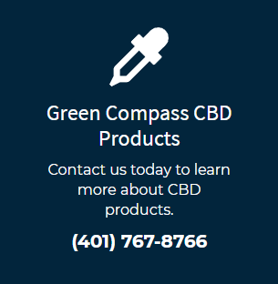

Quality With Purpose
Green Compass: Commited to bringing quality CBD products from our farms to your door!
Now Accepting New Patients | Over 19 Years of Experience | Licensed and Certified
Buy NowCBD Isolate vs. Full Spectrum Hemp Extract
There are two main sources for CBD found in nature. The hemp plant and the marijuana plant. Green Compass products are derived from hemp only. Our hemp has been engineered to be high in CBD, while containing only trace amounts of THC.
Isolate:
For those who would like the benefits of a CBD product without the THC or would just like to add a CBD boost to their Full Spectrum routine, we offer CBD Isolates. This is very simply, pure CBD mixed with MCT oil. CBD helps regulate sleep cycle, mood, and inflammation associated with exercise and physical activity. We offer the Isolate mainly for people who don’t want, or can’t have, THC. Such as athletes or employees who won’t tolerate even traces of THC in their system whatsoever, usually due to drug testing. Even though it would be highly unlikely for our products to cause a positive result for THC on a drug test, we suggest consulting your physician or employer when it comes to this concern. (Much like eating poppy seed muffins and testing positive for Opium.)
Full Spectrum Hemp Extract:
Our full spectrum oils not only contain CBD but also over 100 other beneficial phytocannabinoids such as CBG, CBN, CBDV, THC and others. Not to mention terpenes, flavonoids and fatty acids. These additional compounds also have their own positive impact on the body. Together these compounds create what is known as The Entourage Effect. Simply put, keeping these compounds together has been shown to enhance their benefits by working synergistically in the body. Our full spectrum contains only trace amounts (0.3%) of THC, the molecule with psychoactive properties. This is the federally approved amount and not enough to cause psychoactive results, even with very large doses of the extract. Both our Full Spectrum and Isolates are extracted from only the highest quality hemp.
FAQS
Q: What are the benefits of using CBD?
A: CBD helps to regulate our endocannabinoid system which helps to regulate many of our other biological systems in our bodies, including the nervous system and immune system. When using CBD you will likely feel a calm sense of focus. It will also help to give you relief from daily stresses. CBD will also help in the recovery from exercise induced inflammation and support a healthy sleep cycle. With recent legalization, studies on the benefits of CBD are expected to dramatically increase in the coming years.
Q: Will CBD make me feel “high”?
A: No. CBD is non-psychoactive. There are only trace amounts of the THC Cannabinoid in Green Compass full spectrum hemp extract.
Q: Are there any risks or side effects associated with CBD.
A: Known side effects include feeling tired and an increase or decrease in appetite. These occur in rare cases and are typically associated with very high doses.
Q: What other valuable compounds are in the Full Spectrum Hemp Extract.
A: Green Compass Full Spectrum Hemp Extract also has a host of beneficial compounds such as terpenes and flavonoids, as well as over 80 other cannabinoids, including CBD.
Q: How much should I take? Is there a recommended dose?
A: Everybody is different. We recommended customers who are new to CBD start with the 500 mg Tincture and suggested daily dose. You can always increase the dose or decrease strength as you see fit.
Q: What is the difference between “Full Spectrum” and “CBD Isolate”?
A: Our Full Spectrum Hemp Extract uses the whole flower and has the full array of cannabinoids, terpenes, and flavonoids. CBD Isolate is pure CBD isolated from the hemp extract. This is sometimes preferred by people that would like to increase their CBD intake without ingesting THC.
Q: Is CBD safe for pets?
A: Yes, CBD works the same in all mammals. The endocannabinoid system is within us all. Green Compass has a pet product that is popular with dog owners. Ask your veterinarian if it could be good for other pet species.
Q: Is CBD legal to use?
A: Yes, Green Compass Hemp Extract is 100% legal to purchase and consume. We test every batch to confirm it contains the legal trace amounts of THC.
Q: What is the difference between the hemp plant and marijuana plant?
A: The hemp plant has been engineered to be high in CBD and low in THC. Marijuana is engineered to be high in THC and lower in CBD. Both carry many of the same compounds, but the hemp derived CBD extract does not have psychoactive properties.
Q: How do I use the tincture?
A: We recommend first shaking the bottle to ensure the CBD and flavoring are evenly mixed. Next, fill the dropper to the desired serving size and dispense the oil under the tongue. We recommend letting the oil sit under the tongue for between one and two minutes before swallowing. This ensures optimal absorption.
Q: Is it ok to ingest CBD oil if I am taking medications?
A: We always recommend discussing any medication concerns with your physician.
Q: Are Green Compass Products Organic?
A: Green Compass Farms is taking the necessary steps required to become Certified Organic. Green Compass Farms currently use organic standards and guidelines for growing their hemp.
Q: What is “Bioavailability”?
A: Bioavailability is the degree and rate at which the CBD is absorbed into your bloodstream. Sublingual consumption, under the tongue, will yield some of the best bioavailability, outside of directly injecting CBD into your veins. It is also easier to measure your dose than vaping. Absorption may also vary per individual.